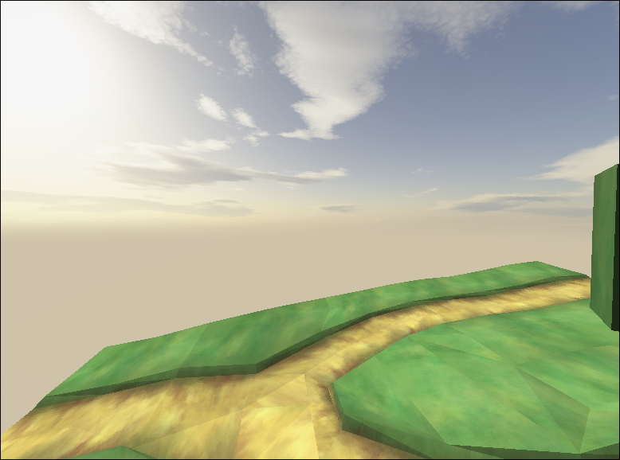

09/08/25 @ 12:28
I got the physics engine to delete the physics objects at a certain height (-100) and now I have to work on collision.
You can also spawn (throw) objects now by clicking, which is pretty cool, make sure to look out for v25.8.9.1 because it should have quite the addition (OBB collision.)
I would post an image or video here too but I am too lazy to as of right now, maybe in the next update?
08/08/25 @ 21:14
I've been working on meshes and textures, also collisions too, but that's not finished yet.
